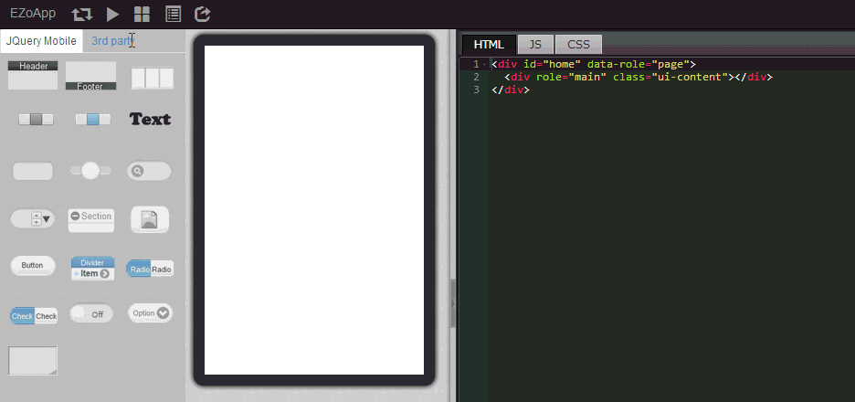
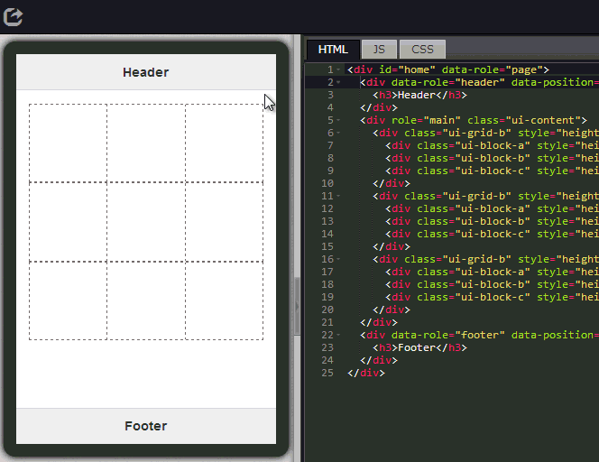
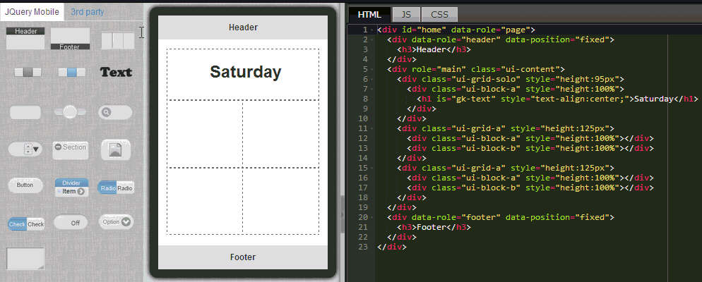
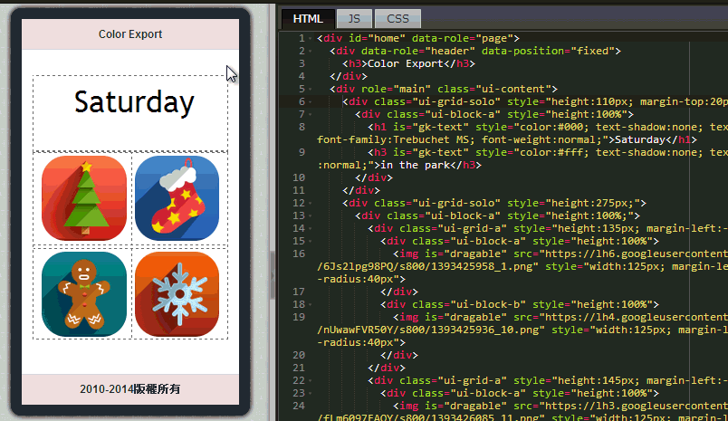
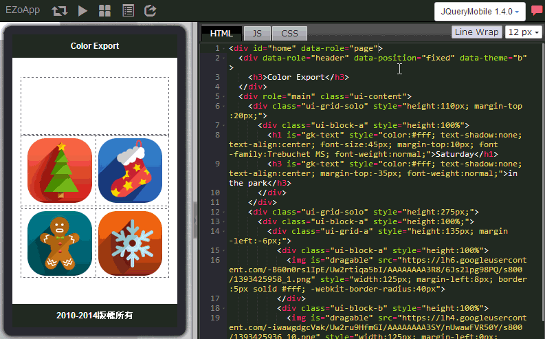

其實就算是視覺設計師，在做完 UI 交給工程師後，如何把畫面按照元搞呈現，往往偏左了些，往往間距大了點，總要一來一往好幾次才能確認，而確認後如果又遇到了客戶的 UI 需求變更，整個步驟又得重頭來過，不僅浪費成本，又幾乎把人力資源給耗竭。
現在我們可以利用 EZoApp 這套雲端開發工具，運用它提供的現成元件，拖拉進入畫面，藉由簡單的程式碼編撰 ( 有的畫面甚至不需要 )，就可以輕輕鬆鬆排列出合適的畫面，甚至可以將外部編輯的網頁語法貼進編輯器，即時預覽產生的畫面格式，省下了不少前端與後端銜接的開發時間。 EZoApp 更提供了雲端儲存的功能，當開發者做好畫面後可即時提供給業主或客戶進行校稿，同時在雲端也提供了完善的版本機制和安全性，因此對於開發者來說更是不可或缺的一套工具。
看過了五個章節的教學介紹，相信大家對於 EZoApp 的威能都有了一定程度的了解吧！接下來的這個章節，我們將用之前所學到的技巧，快速的來打造一個入口畫面。
範例連結：
基本元件實作 - 打造入口頁面
如前幾節所述，我們只要利用拖拉的方式，就可以把這些元件一個個的加入到畫面當中，程式碼也會自動添加。不過只學會拖拉元件是沒有辦法在幾分鐘內完成排版的，這時候我們就要妥善的利用 EZoApp 實用的屬性面板工具，來快速的編輯我們所拖曳出來的元件。( 如果找不到屬性面版，可以把程式碼區塊的大小變小，或先隱藏起來，就可以看到屬性面版了 )
這裡我們使用屬性面板來編輯 grid 這個元件的屬性，我們就可以設定 grid 的欄位是一欄還是兩欄，若是需要有兩列以上，就直接再新增一個 grid 就可以囉！
我們同樣利用拖拉的方式，就可以輕鬆的把文字加入到 grid 裡頭，點選文字，就可以進行編輯，不過這邊有個要注意的地方，拖曳進來的文字預設為 h1 的字體大小且靠右對齊，因此我們可以將 h1 標籤加入 style=”text-align:center’”，就能夠讓文字置中囉！
<h1 style="text-align:center;">文字</h1>

關於圖片的載入，我們這裡使用了3rd Party 裡頭的 image 元件，不過因為該元件的預設寬度為 100%，高度為 250px，所以拖拉進入畫面後會有變形的現象，不過我們只要手動進行修改寬高，並且填入所需的圖片網址，就可以輕鬆的產生合適大小的圖片。
header 與 footer 元件，是使用 JQueryMobile 的基本元件，因此我們只要在 header 和 footer 的標籤內，分別加入 data-theme="b" 的一小段程式碼，就可以把樣式進行更換。
<div data-role="header" data-position="fixed" data-theme="b">
<h3>我是 Header </h3>
</div>
其實到目前為止我們都只是利用拖拉元件，然後修改一下元件的程式碼，就可以把內容排列的差不多了( 不過其實編輯程式碼，還是需要對 css 有一些基本的認識，例如 margin 怎麼用？height 和 width 的設定...等 )，接下來我們只要挑一張合適的背景圖，放在最外層 div 裡頭當作背景圖就可以囉！
<div id="home" data-role="page" style="background:url(圖片網址); background-size:100% 100%;">
範例連結：
基本元件實作 - 打造入口頁面